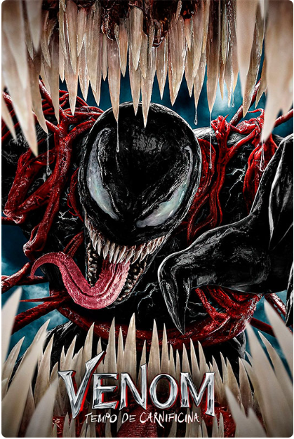
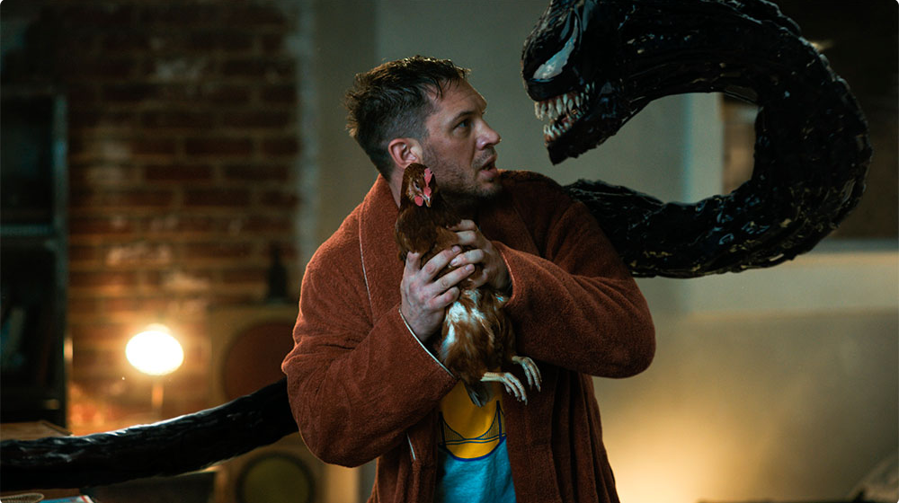

Filmes Resenha: Venom – Tempo de Carnificina abraça sua própria galhofa
Por Bruno Passos
22 outubro 2021
Quando Venom estreou nos cinemas em 2018, recebeu muitas críticas pelo roteiro furado e preguiçoso, além da inconsistência de tom. Era um filme que não se decidia entre ser drama, suspense ou comédia romântica.
Sua sequência, Venom – Tempo de Carnificina, reconhece as falhas do original e as repete, mas pelo menos abraça sua própria galhofa. O diretor Andy Serkis disse que é uma história de amor. Não romântico, claro, mas sobre dois seres que precisam conviver e enlouquecem um ao outro pelas suas diferenças.
O roteiro aproveita isso para gerar conflitos e brigas; e se falha em criar uma jornada emocional de raiva e reconciliação, acerta na comédia desses momentos.
Se há um lado pelo qual o filme funciona, é no humor entregue por Tom Hardy. Sendo o humano Eddie Brock, ou a voz do simbionte alienígena, os diálogos entre os dois são os únicos momentos em que risadas genuínas são arrancadas do público – sim, é, descaradamente, uma comédia. Infelizmente, as gargalhadas restantes são sobre a péssima qualidade da obra.

Há uma pífia tentativa de passar uma mensagem de que Venom e Brock aprendem um com o outro e se melhoram, mas a história é tão chinfrim que resulta numa artificialidade que só perde para a peruca de Cletus Kasady (Woody Harrelson) na cena pós-créditos do primeiro filme.
Naquele longa, quando os simbiontes lutam, resultam em massas disformes se digladiando numa mistura confusa que tornava difícil entender o que estava acontecendo na tela. Já em Tempo de Carnificina, há certa melhora nesse quesito, mas muito do CGI se perde em cenas escuras, evidenciando que não houve como entregar um trabalho melhor neste quesito. É uma pena o design verdadeiramente legal dos alienígenas não ser exibido em sua plenitude.
O roteiro é cheio de muletas narrativas, com ações se ligando de forma conveniente demais para ser crível. Há personagens absolutamente inúteis, momentos de burrice total de alguns personagens e elementos apresentados e abandonados sem a menor vergonha (veja a cena em que Venom reage à cor do Carnificina).
A baixa classificação indicativa também não ajuda. Com constantes papos sobre desmembrar pessoas e devorar cabeças, as lutas “viscerais” não derramam uma gota de sangue. Se algo que é alardeado a todo momento nunca acontece, ele não tem valor e resulta em uma construção de personagem que não se materializa.

Michelle Williams está de volta como Anne, interesse amoroso de Brock e, assim como os antagonistas interpretados por Harrelson e Naomie Harris (a vilã Shriek), mergulha na concepção canastrona na qual o filme foi feito, entregando personagens caricatos e cartunescos e nada memoráveis.
Há uma cena pós-créditos que explodirá cabeças e dividirá opiniões, mas que promete grandes acontecimentos para o futuro da franquia. Resta aos fãs ficarem na torcida para que algo bom saia nas telas.
Venom – Tempo de Carnificina não é bom. Pode até haver momentos em que Hardy consegue entreter, mas se há um elogio que possa ser feito, é que o filme tem a decência de ser curto (97 minutos, com os créditos), ciente de sua própria futilidade. O simbionte originado de um dos uniformes mais estilosos dos quadrinhos continua com adaptações cinematográficas aquém de seu potencial.
Venom – Tempo de Carnificina
Duração: 97 minutos
Estúdio: Sony Pictures Entertainment
Direção: Andy Serkis
Roteiro: Kelly Marcel e Tom Hardy
Elenco: Tom Hardy, Woody Harrelson, Michelle Williams, Naomie Harris, Reid Scott, Stephen Graham, Peggy Lu